Here are a few pictures to jog
your memory
You can Click on the thumbnail pictures to see a larger picture in a new window.

1969 - 1970 Grade 5 Class
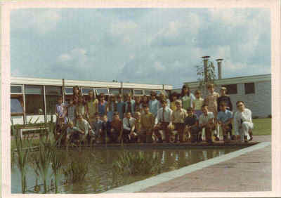
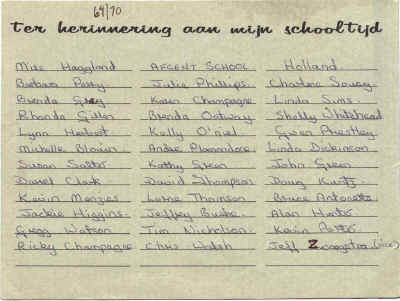
The picture that started it all
{kind=link}
| 1968/69
Grade 9 Class.
L to R standing...Donna Manuel, Karen
Porter, Karen Taviner, Lynn Murray, Wendy Archibald, Pat McElroy.
L to R. seated....Bob Zwaagstra, Rick
Dossett, Doug Saxon, Jerry Bernard, Ed Gordon, Rick Edwards.
(****note Saxon's finger. What can I
say, it was the 60s')
|
Cdn High School Teachers. School
Year: 1970/71.
L. to R.: Mr. Ron MacLellan (math,
physics & chemistry), Mademoiselle Monique Brown (French), Mr. Bill
Moreau (history & geography), Ms. Alfreda Jarosz (English), Mr Lynd
Pierce (Cdn principal).
|
| Group
photo June, 1970.
L. to R. front row: Jeff Whitehead,
Brian Hunter, Elizabeth (Anne) Pendergast, Vicki Kemsley (I think),
Shelley Prokopetz, Richard Williams, Scott Watson.
L. to R. back row: Dave Grady (with cup),
Mark Eckley, Ed Gordon, ??? Accch I know this guy...a Busche?? Was
a Grade 9 student I think), Terry Gilhen, Frazer Smith
|
Afcent
Cdn High School
grades 9 to 12. 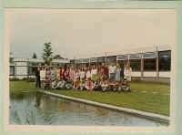 |
| Afcent School
(1968 - 1969) CDN Grade 2 - 3 class 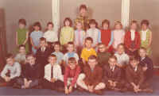 Teacher Mrs. Cates Back Row - Debbie Coleburn, Angela (Snowy) White, Kim Killen, Denise Jean-Marie, Wendy Zwaagstra, Janice Walsk, Kelly Petchiny, Jane Zwaagstra, Kathy Porter and Holly Hann. Middle Row - Patrick Killen, Kevin Manuel, Guy Cormier, Ricky Poulin, Stephen Wilson, Jamie Harris, Tony Dossett and Robbie Smith. Front Row - Doug Robb, Harold Pendergast, Leonard Geiger, Drew Hunter, Patrick Hurens, Gordon Doak and Robert Gilhooly. Missing from photo is - Terry Higgins and Andy Bates (Dave Thompson's note: Spelling of student names in above photo may be incorrect. Anyone confirming names please email me.) |
|
| Afcent School
(1969 - 1970) CDN Grade 3 class 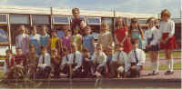 Teacher - Edna Rollauer Confirmed students so far are Holly Hann back row on right. Back row (with the glasses) is Denise Soucy, front row, 3rd from the left is Kenny Thomson, 3rd from the right is Robert Wolfe. |
|
| 1968-1969 High School Photo 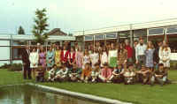 Thank You to Anne Thomson for these names Anne Thomson right in the middle, next to the very short girl whose name I don't know. Looking over my shoulder is Vicki Kemsley and looking over her shoulder is Dale Archibald (the guy). Next to him is the guy with the red tie who I'm pretty sure is Gordon Middler. In front of him is Sharon Labchuk and next to her (with the green skirt) is a girl with a French name that I can't recall right now, and in the brown dress is Janet Wadleigh. Between Sharon and the girl in the green skirt is a boy called Rob Zwicker I believe. The tall blonde girl in the red sweater is Elizabeth Pendergast and the girl with the blue and white dress is Cheryl Wadleigh. The one on the end is Cathy Poulin. Sitting in front of Cathy on the ground is Dave Grady, then??, then Dale Williams, and I think that's about all I can remember. The rest of the students were probably in grade 9 and I didn't know them too well. (The fellow on the ground in the orangey sweater is Paul ??) The two unidentified teachers in the back on the left are Roy Johnson (tallest) and Walt Yakiwchuck (white shirt / black tie) the girl in the pink dress to the left of the very short girl is Sandra Comfort. |
|
| 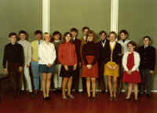 1967-1968 Grade 9 Class |
|
| 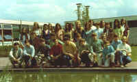 1969-1970 High School Picture (? grade) |
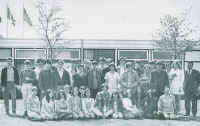 1969-1970 Whole Canadian High School picture |
| 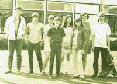 1969-1970 Grade 9 Class |
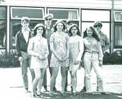 1969-1970 Grade 10 Class Terry Gilhan, Donna Manuel, Robert Zwaagstra, Karen Porter, Ed Gordon, Leslie Nichols, Wendy Archibald, Jerry Bernard |
| 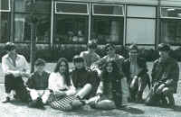 1969-1970 Grade 11 Class Brian Nichols, Steve Whitehead, Sharon Jackson, Brian Hunter, Frazer Smith, Bill (wade) Eckley, Janet Wadleigh, Scott Watson, Richard Williams |
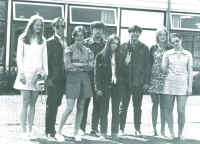 1969-1970 Grade 12 Class Elizabeth Penddergast, Dale Archibald, Trudy Bradly, Dale Williams, Sharon Labchuck, David Grady, Jane McCullogh, Vicki Kemsley |
| Ms.
de Groot's Grade 3-4 1969 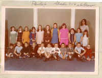
(Girls L - R)
Clare Plamondon, (Boys L - R) |
|
| Grade 3-4 1970 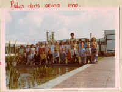 |
|
| Ms. Stuart's
Kindergarden 1970 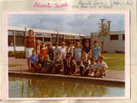
(Girls L - R)
Leanne Oulette, Heather Wolf, Diane Oatway, Brenda Dove, Sharon Brower, Debbie Whalen, Debbie Marsh, Josie Simard,Michelle Lee. (Boys L - R) |
|
| Unknown
AFCENT Class 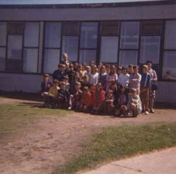 Help Identify these people. Is this Mrs. Chatsick's Class |
|
{kind=link}
{kind=link}
{kind=link}
{kind=link}
{kind=link}
{kind=link}
{kind=link}
{kind=link}
{kind=link}
{kind=link}
{kind=link}
{kind=link}
{kind=link}